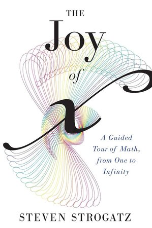

Sobre mí
Soy estudiante de segundo año de Ingeniería Civil Industrial en la Universidad Técnica Federico Santa María, donde llevo dos semestres trabajando como ayudante.
Tengo experiencia en inteligencia artificial y me interesa aplicarla para optimizar procesos y apoyar la toma de decisiones.
Hablo francés a nivel nativo, tras completar el Bac del sistema francés, e inglés a nivel intermedio.
Estoy abierto a prácticas, proyectos y conexiones en IA, datos e ingeniería industrial.
Leyendo ahora
-

The Joy of x
Un recorrido por las grandes ideas de la matemática, de los números al infinito, contadas de forma intuitiva.
-

Nexus
Una historia de las redes de información, desde la Edad de Piedra hasta la inteligencia artificial.
Experiencia
-
Sept 2026 — Presente
Ayudante de Álgebra Lineal, Departamento de Matemática · Universidad Técnica Federico Santa María
Ayudantía del ramo de Álgebra Lineal. Presencial · Valparaíso, Chile
-
Mar — Ago 2026
Ayudante, Departamento de Física · Universidad Técnica Federico Santa María
Jornada parcial · Región de Valparaíso, Chile
Educación
-
2025 — Presente
Ingeniería Civil Industrial · Universidad Técnica Federico Santa María
-
2020 — 2024
Enseñanza media (Bac francés) · Lycée Jean D'Alembert
Logros
-
Feb 2025
Beca de excelencia del gobierno francés · Bourse Excellence-Major
Otorgada por la Agence pour l'enseignement français à l'étranger (AEFE) por excelencia académica.
-
Dic 2024
Puntaje 1000 en Matemática M1 · PAES
Puntaje máximo en la Prueba de Acceso a la Educación Superior.
-
Nov 2024
20/20 en Matemática, Física y Química · Bac francés
Nota perfecta en las pruebas de Matemática, Física y Química del Bac (Baccalauréat), el examen de acceso a la educación superior del sistema francés.
-
Sept 2026
Certificaciones en Fluidez de IA · Anthropic
Tres cursos de Claude Academy: AI Fluency: Framework and foundations, AI Fluency for educators y Building effective human-agent teams.
Habilidades
Aptitudes
Idiomas
Ver perfil completo en LinkedIn →Material
Apuntes, ejercicios y otro material de estudio que he preparado. Puedes descargarlos libremente.
Cargando material…